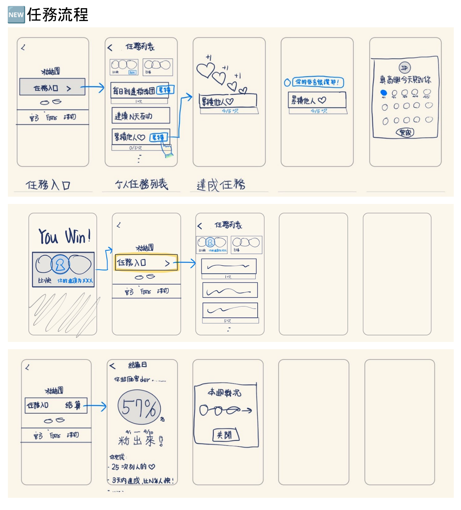

用戶做了事，但感覺不到被看見
hidol 是以粉絲為核心的社群平台。數據顯示用戶完成互動之後，回訪動機薄弱——他們發文、追蹤、留言，但這些行為之後什麼都沒有發生。平台需要一套機制，讓每個小行動都有意義。
設計目標不只是「加任務」，而是建立正向反饋循環：即時的成就感 + 長期的累積動力，讓留下來這件事本身就有回報。
先讓大家站在同一張圖前面
專案啟動時，設計、PM、營運對「任務」各有想像，討論繞了很久沒有辦法落地。我習慣在這種時候先拿平板把 flow 畫出來——不是為了漂亮，是為了讓大家有同一張圖可以指著說話。
用草稿的好處是：大家不會失焦在視覺細節的討論，可以專注在流程本身。當初步流程確認之後，接下來的討論就比較容易進入任務飛輪這個比較硬一點的概念。


營運擔心競爭任務會破壞平台的「粉絲友善」調性。飛輪框架讓大家看見比例關係之後，共識自然出現：累積任務是核心，競爭是點綴刺激，比例對了兩者不衝突。
除了飛輪，也帶入了 Player Type 的 TA 分佈：hidol 的用戶以 Achiever（成就型） 為主，競爭對他們來說是「被看見自己在進步」的一種方式，而不是「一定要贏」——這讓營運理解到競爭設計可以轉化為正向動力。

這個案子有一個很現實的限制：沒有門票、小卡等實體禮物可以給用戶。團隊擔心虛擬成就沒有足夠的吸引力——用戶會不會做一做就放棄？
設計上從非實質獎勵的三個層次來建構整個循環：
最後用戶的反應打消了疑慮。而當營運之後希望在排行榜發放實體禮物時，這套架構也完全可以承接——非實質跟實質獎勵並不互斥。
| 類型 | 用戶心理 | 任務邏輯 | 獎勵時機 |
|---|---|---|---|
| 即時型 | 低門檻快速滿足 | 完成單一行為即得 | 即時動畫回饋 |
| 累積型 | 看重積分與地位，想展示自己的進步——每多累積一點都是成就 | 行為次數累積達標 | 進度條 + 達標慶祝 |
| 競爭型 | 從勝利中獲得快感，想成為佼佼者——勝利就是動力 | 排行榜 / 限時比拚 | 週期結算 + 特別成就 |
| 結算型 | 活動完結的成就感 | 活動週期結束統計 | 結算頁大動畫 |
任務列表：三個區塊，三種用戶動機
任務列表頁是整個系統的核心入口，設計從頁面目的出發——不是把任務全部列出來讓用戶自己挑，而是讓每個進來的人都知道「我現在要做什麼」。

成就任務主頁面

左：任務列表三區結構；右：任務達成即時回饋
結算動畫：把「炫耀感」設計進分享路徑
任務結算是整個系統情緒設計的高峰，也是帶動有機傳播的關鍵。這個動畫不只是慶祝——它被設計成積極用戶想要分享、消極用戶感到被鼓勵的體驗。
任務結算與切換動畫——積極用戶可以炫耀，消極用戶看到的是鼓勵
上線前一個月，從 App 改成 Web
原本整套成就系統是為 App 端設計的，距離上線一個月，工程團隊確認技術限制——部分功能短期內只能在 Web 端實現。
這不只是換平台——App 和 Web 的互動範式完全不同：App 習慣底部手勢導航、觸控反饋；Web 習慣滑鼠操作、多分頁切換。最關鍵的「結算動畫」和「任務達成彈窗」，都要從頭重新設計互動邏輯。
保留視覺語言不變，把所有「觸控手勢」改成「明確按鈕」，動畫改成 CSS / Web 實作，確保在桌機和手機 Web 都能正常呈現。


成就系統完整畫面


上線兩週互動率 +150%
- 2025 / 07 正式上線
- 上線兩週，用戶停留時間與互動率 提升 150%
- 用戶成就截圖在社群自發流傳，帶動有機成長


用戶在社群自發分享成就截圖